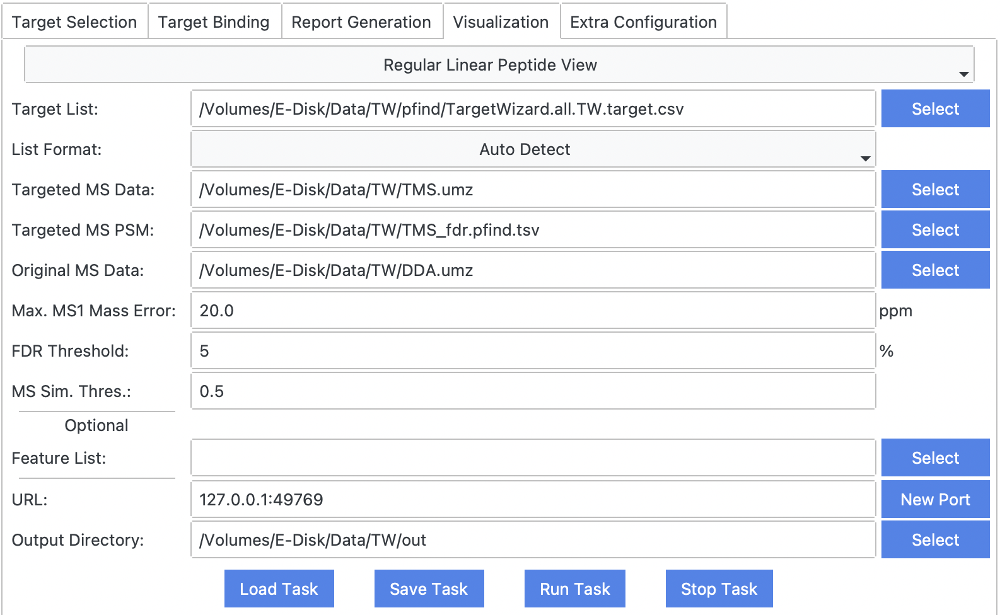

Interactive Visualization Views
- Target View
- Target View for Crosslink
- Target Dual View for Crosslink
- Crosslink Site View
- Exhaustive Search View for Crosslink
Target View
TargetWizard.TargetView — ModuleTarget View
Requirements
TargetWizard.TargetView.require — Constant- target list (multiple formats supported), e.g.,
TargetWizard.all.TW.target.csv. - traditional and targeted mass spectrometry data, e.g.,
DDA.rawandTMS.raw.- The raw data should be converted into an open-source format such as MS1/MS2. ThermoRawRead is recommended.
- (filtered) identification results of targeted mass spectrometry data, e.g.,
TMS_fdr.pfind.csv. - optional: precursor list detected by
PepPre
Output Results
TargetWizard.TargetView.output — ConstantOnce finished, TargetWizard will start a web server for user to review each target. (example)
Usages
TargetWizard.TargetView.usage — ConstantMax. MS1 Mass Error
mass error used to match targets, PSMs, and MS scans.
FDR Threshold
used to filter PSM list.
MS Sim. Thres.
used to match traditional and targeted MS scans.

Examples
TargetWizard.TargetView.example — ConstantSelect Target
View MS Acquisition
Select PSM
View PSM
View XIC of Fragment Ions and Precursor Ion
Target View for Crosslink
TargetWizard.TargetXLView — ModuleTarget View for Crosslink
Requirements
TargetWizard.TargetXLView.require — Constant- target list (multiple formats supported), e.g.,
TargetWizard.all.TW.target.csv. - traditional and targeted mass spectrometry data, e.g.,
DDA.rawandTMS.raw.- The raw data should be converted into an open-source format such as MS1/MS2. ThermoRawRead is recommended.
- (filtered) crosslink identification results of targeted mass spectrometry data, e.g.,
TMS.plink.csv. - optional: (filtered) linear peptide identification results of targeted mass spectrometry data, e.g.,
TMS_fdr.pfind.csv. - optional: precursor list detected by
PepPre - optional: candidate crosslink list
Output Results
TargetWizard.TargetXLView.output — ConstantOnce finished, TargetWizard will start a web server for user to review each target. (example)
Usages
TargetWizard.TargetXLView.usage — ConstantMax. MS1 Mass Error
mass error used to match targets, PSMs, and MS scans.
FDR Threshold
used to filter PSM list.
MS Sim. Thres.
used to match traditional and targeted MS scans.
Examples
TargetWizard.TargetXLView.example — ConstantSelect Target
View MS Acquisition
Select PSM

View PSM
View XIC of Fragment Ions and Precursor Ion
Target Dual View for Crosslink
TargetWizard.TargetDualXLView — ModuleComparative Target View for Crosslink
Requirements
TargetWizard.TargetDualXLView.require — Constant- target list (multiple formats supported), e.g.,
TargetWizard.all.TW.target.csv. - two sets of traditional or targeted mass spectrometry data, e.g.,
DDA.rawandTMS.raw.- The raw data should be converted into an open-source format such as MS1/MS2. ThermoRawRead is recommended.
- two sets of (filtered) crosslink identification results of targeted mass spectrometry data, e.g.,
DDA.plink.csvandTMS.plink.csv. - optional: two sets of precursor list detected by
PepPre - optional: candidate crosslink list
Output Results
TargetWizard.TargetDualXLView.output — ConstantOnce finished, TargetWizard will start a web server for user to review each target. (example)
Usages
TargetWizard.TargetDualXLView.usage — ConstantMax. MS1 Mass Error
mass error used to match targets, PSMs, and MS scans.
FDR Threshold
used to filter PSM list.
Examples
TargetWizard.TargetDualXLView.example — ConstantSelect Target
View MS Acquisition
Select PSM

View PSM
Crosslink Site View
TargetWizard.CrossLinkSiteView — ModuleCrosslink Site View
Requirements
TargetWizard.CrossLinkSiteView.require — Constant- filtered crosslink identification results of targeted mass spectrometry data, e.g.,
TMS_fdr.plink.csv. - traditional or targeted mass spectrometry data, e.g.,
DDA.raworTMS.raw.- The raw data should be converted into an open-source format such as MS1/MS2. ThermoRawRead is recommended.
Output Results
TargetWizard.CrossLinkSiteView.output — ConstantOnce finished, TargetWizard will start a web server for user to review each target. (example)
Additional detailed csv reports are also saved to output directory.
Usages
TargetWizard.CrossLinkSiteView.usage — ConstantMax. Mass Error
mass error used to match PSMs, and MS scans.
Intensity Thres.
threshold used to split XIC curves.
Smooth Width
used to smooth XIC curves.
Examples
TargetWizard.CrossLinkSiteView.example — ConstantSelect Crosslink Pair
View MS Acquisition
View PSM
View Fragment Ion
Exhaustive Search View for Crosslink
TargetWizard.ExhaustiveSearchXLView — ModuleExhaustive Search View for Crosslink
Requirements
TargetWizard.ExhaustiveSearchXLView.require — Constant- candidate crosslink pair list
- (multiple) mass spectrometry data, e.g.,
TMS.raw.- The raw data should be converted into an open-source format such as MS1/MS2. ThermoRawRead is recommended.
Output Results
TargetWizard.ExhaustiveSearchXLView.output — ConstantOnce finished, TargetWizard will start a web server for user to review each target. (example)
Usages
TargetWizard.ExhaustiveSearchXLView.usage — ConstantMax. MS1 Mass Error
mass error used to match targets, PSMs, and MS scans.
Examples
TargetWizard.ExhaustiveSearchXLView.example — ConstantSelect Crosslink Pair
Select MS File
View MS Acquisition
View Candidate MS List
View Candidate PSM